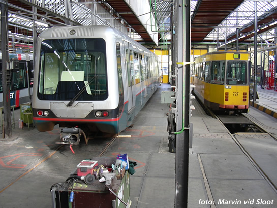

Vertragingen op Erasmuslijn en meer metronieuws...
- vrijdag 12 december 2008 17:14
- Geschreven door Joachim
Zondagmiddag traden er wederom storingen op in wisselcomplex Rijnhaven. Hierdoor was men genoodzaakt de metrotreinen met een hulprijsignaal door het wisselcomplex te helpen, als gevolg van een absolute (negatieve) signalering. Dit zorgde op de Erasmuslijn voor grote vertragingen, die soms konden oplopen tot 20 à 30 minuten.
Vanmorgen in de spits waren er ook storingen op de Erasmuslijn: door een vals bezet wissel (wisselcomplex Slinge) kon er niet op normale wijze gekeerd worden op Slinge spoor 3. Hierop werd besloten de treinen met als eindbestemming Slinge te laten keren op perronspoor 2.
De gehele morgen werd er ook een negatieve signalering (nul permissief) ontvangen op Hoogvliet spoor 1, net buiten het perron. De problemen bleven niet beperkt tot de Erasmuslijn: later op de morgen werd ook de Calandlijn getroffen. Op station Schiedam Centrum behoorde een wagendienst te keren op de keersporen (wisselcomplex Schiedam Centrum 3), echter door een fout in de verkeersleidingsprocessor werd deze wagendienst richting Parkweg gestuurd. Besloten werd om te keren op station Parkweg en richting Schiedam Centrum terug te rijden. Helaas zorgde dit voor een valse bezetmelding in het perronspoor van Parkweg, waardoor wederom vertragingen ontstonden van ongeveer 10 minuten. Meer informatie over de signaleringen is op de ATB-Informatiepagina te vinden.
Foto's van de 5336
De 5336 is vorige week van remise Waalhaven naar remise Kleiweg overgebracht voor schadeherstel. Inmiddels staat de 5336 in de Centrale Werkplaats. Bronnen melden dat er een kans is dat rijtuig 5336 misschien terug moet naar fabrikant Bombardier in België. De reden hiervoor is onduidelijk. Marvin v/d Sloot van OV-Digitaal maakte onderstaande foto:

Rijtuig 5336 (gezien vanaf de B-zijde) in de Centrale Werkplaats Kleiweg. Uiterst links een Citadis-tram en rechts ZGT-stel 727.
Staking?
De staking die donderdag aanstaande is aangekondigd voor het streekvervoer in Nederland en de NS gaat door. Of de RET ook meestaakt is nog NIET bekend. Hierover zal woensdag uitsluitsel komen. Zodra er meer bekend is, zal dit hier op de site gemeld worden.